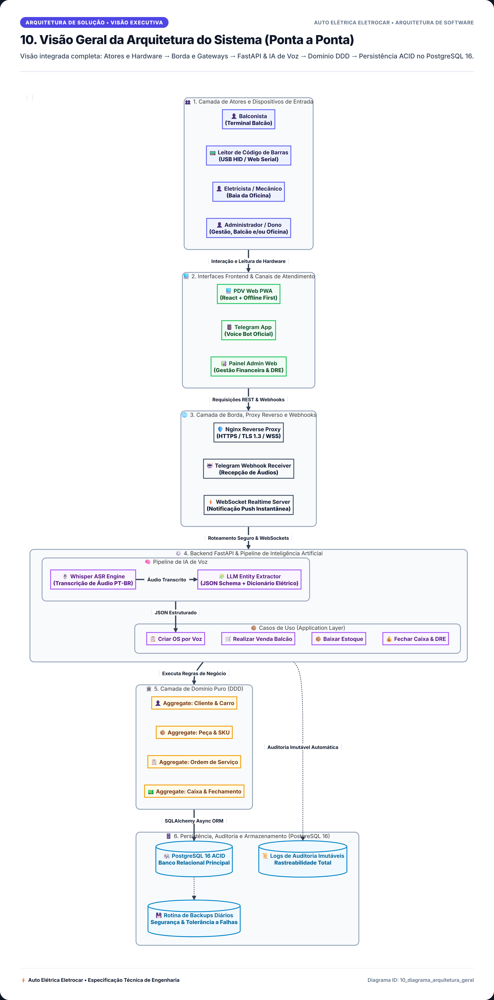
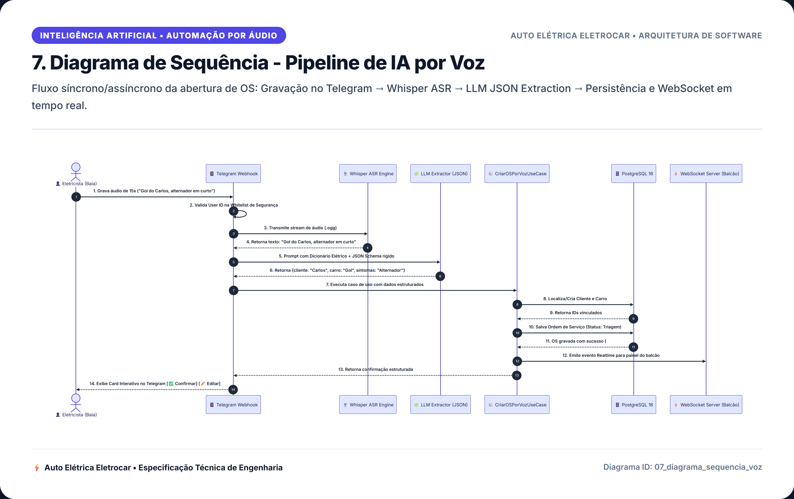
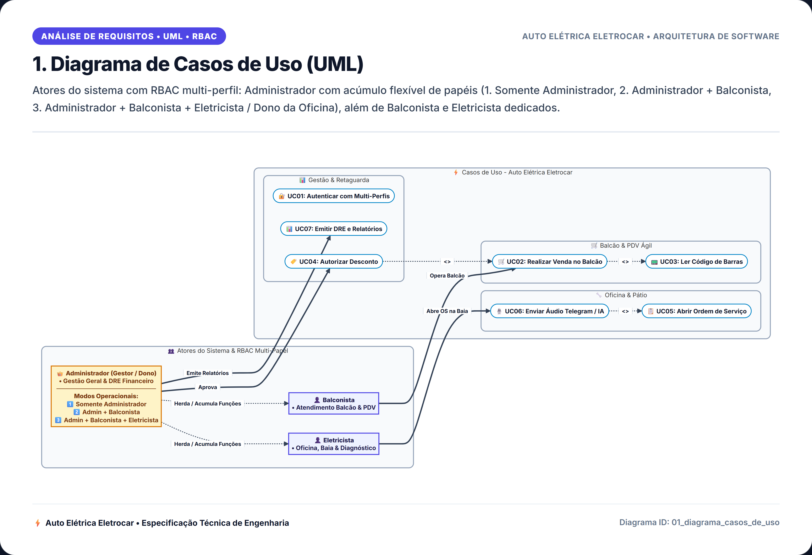

Objetivo
Projetar, desenvolver e validar um sistema completo de gestão integrada e apoio à decisão para a oficina mecânica e auto elétrica Auto Elétrica Eletrocar, eliminando perdas de peças, gargalos de atendimento no balcão e ausência de controle financeiro por meio de engenharia de software moderna e inteligência artificial aplicada.
- Digitalizar o Fluxo de O.S.: rastreabilidade integral da entrada do veículo, diagnósticos, aprovação com reserva atômica de peças e entrega com garantia;
- Otimizar o Balcão e Frente de Caixa: leitor de código de barras sem travamentos por perda de foco e busca textual com trigramas (`pg_trgm`);
- Interface por Voz via Telegram: automação de abertura de ordens de serviço direto do pátio com Whisper ASR e LLM (mãos livres de graxa);
- Blindagem Financeira & Compliance: Caixa diário com fechamento cego duplo, cobrança instantânea com PIX dinâmico e DRE em tempo real.
JUSTIFICATIVA
- Ambiente de Graxa & Sujeira: mecânicos e eletricistas não podem usar teclado e mouse sujos durante o serviço;
- Informações Perdidas: anotações em papel rasgavam ou sumiam, gerando laudos incompletos e reclamações;
- Falta de Padronização: veículos sem histórico de manutenção preventiva ou rastreabilidade.
- Furos de Estoque: peças retiradas da prateleira sem reserva prévia, causando orçamentos quebrados;
- Leitores USB Convencionais: perda de foco na janela do navegador interrompia vendas no balcão;
- Códigos Alternativos: dificuldade em encontrar peças similares por falta de indexação fonética.
- Ausência de Fechamento Cego: divergências constantes entre o dinheiro físico e o registro contábil;
- Contas Pessoais vs. da Empresa: dono sem visão clara do DRE real e margem líquida de lucro;
- Lentidão em Pagamentos: demora na confirmação manual de PIX e controle manual de fiados.
METODOLOGIA
Divisão estrita em 4 camadas concêntricas garantindo inversão de dependência (DIP) e independência total de frameworks:
- 1. Domain: Entidades ricas, Value Objects imutáveis (`Dinheiro`, `CodigoBarras`, `CpfCnpj`) e Domain Services (cálculo de DRE e alçadas);
- 2. Application: Casos de uso orquestrados, DTOs estritos e portas abstratas;
- 3. Adapters: Controllers FastAPI, Gateways HTTP/Telegram/PIX e Repositórios SQLAlchemy;
- 4. Infra: PostgreSQL 16 com triggers ACID e segurança JWT HTTP-Only.
Ciclo Red-Green-Refactor aplicado em todas as regras operacionais:
- Cobertura Mínima > 80%: validação contínua com `pytest` e `pytest-cov`;
- Pirâmide de Testes Completa: testes unitários isolados para regras de domínio + testes de integração contra PostgreSQL 16 real;
- DevOps 100% Docker: contêineres orquestrados com PostgreSQL (`pg_trgm`, `pgcrypto`), backend Python 3.12 e pgAdmin;
- Trilhas de Auditoria Imutáveis: triggers SQL gravando logs forenses de cada mutação em banco.
DESCRIÇÃO DO PROJETO (Visão Geral do Sistema Completo)
Máquina de estados finita: TRIAGEM ➔ DIAGNÓSTICO ➔ AGUARDANDO APROVAÇÃO ➔ EM EXECUÇÃO ➔ FINALIZADA ➔ ENTREGUE.
Captura de leitor de código de barras USB/Bluetooth via listener global sem perda de foco (Keyboard Wedge / Web Serial).
Eletricista envia áudio no Telegram ➔ Webhook com segredo ➔ Transcrição técnica via Whisper ASR ➔ Extração semântica com LLM Claude em JSON Schema.
Caixa diário com fechamento cego duplo (conferência às cegas pelo balconista e dono), DRE gerencial contínuo e Fluxo de Caixa.
Fotos ou prints de tela (referente ao andamento do projeto)



CONSIDERAÇÕES FINAIS
- Eficiência Operacional Real: redução drástica do tempo de recepção de veículos através da entrada por voz com IA no pátio;
- Estoque 100% Confiável: fim dos furos de inventário com a reserva atômica na aprovação do orçamento;
- Transparência Financeira: dono da oficina possui DRE diário, controle de fechamento cego e conciliação instantânea PIX;
- Manutenibilidade & Escalabilidade: código estruturado sob Clean Architecture e TDD (>80% cobertura), permitindo expansão sustentável.
- Interface PWA Mobile Offline-First: cache local com IndexedDB e sincronização assíncrona para atendimentos externos de socorro elétrico;
- Integração com Scanner Automotivo OBD-II: comunicação via Bluetooth para coleta automática dos códigos de falha (DTCs) da injeção eletrônica direto para a OS;
- Notificações Automáticas no WhatsApp: aviso ao cliente com link de aprovação e chave PIX para pagamento direto pelo smartphone.
REFERÊNCIAS BIBLIOGRÁFICAS
MARTIN, Robert C. Clean Architecture: A Craftsman's Guide to Software Structure and Design. Prentice Hall, 2017.
EVANS, Eric. Domain-Driven Design: Tackling Complexity in the Heart of Software. Boston: Addison-Wesley, 2003.
PRESSMAN, Roger S.; MAXIM, Bruce R. Engenharia de Software: Uma Abordagem Profissional. 9ª ed. Porto Alegre: McGraw-Hill, 2021.
SOMMERVILLE, Ian. Engenharia de Software. 10ª ed. São Paulo: Pearson Education do Brasil, 2019.
TIENGO, Walter; et al. Documentação de Engenharia e Especificação do Sistema Eletrocar. CEFET-MG Campus Varginha, 2026.
Muito Obrigado pela Atenção!
Estamos abertos para considerações, perguntas e contribuições da banca examinadora.